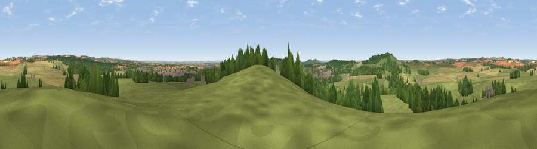

Viewpoint near Ludgershall
#15400 in England · top 21% of its area beats it · near LudgershallThe view, rendered

A 360° render of this exact spot computed from the terrain model, tree cover and land cover — summer colours, afternoon light, calibrated against photographs of famous viewpoints. Real trees, hedges and buildings will differ in detail.
The panorama
Grey silhouette: terrain skyline in each direction (720 bearings, Earth curvature and refraction included). Dashed green: skyline with trees (+15 m) and buildings (+8 m) as obstacles. Blue strip: how far the ground is visible on each bearing.
Where the view opens
Wedge length = distance to the farthest visible ground on that bearing (vegetation-aware). Rings at 10, 25 and 50 km.
What fills the view
59% grassland · 22% cropland · 16% woodland · 4% built-up
Angular shares of the visible panorama (visual magnitude), not map area. Landscape diversity 0.46 (0–1 Shannon).
Key numbers
More beautiful places nearby
The staircase of upgrades: each row has a higher view potential than everything closer. Driving times are estimates from straight-line distance, calibrated against real road routing — check an actual route before setting out.
| Place | Direction | Drive | Score |
|---|---|---|---|
| Viewpoint near Tidworth | W · 3 km | ~7 min | 61.0 |
| Wexcombe Down | NNE · 7 km | ~15 min | 66.9 |
| Viewpoint near Bulford | SSW · 10 km | ~19 min | 70.3 |
| Martinsell viewpoint | NNW · 14 km | ~26 min | 77.3 |
| Viewpoint near Berwick St John | SW · 44 km | ~64 min | 78.2 |
| Viewpoint near Buriton | ESE · 56 km | ~78 min | 80.0 |
| Beacon Hill | ESE · 65 km | ~88 min | 85.8 |
| Mottistone Down | SSE · 68 km | ~92 min | 87.2 |
51.25831, -1.64849 · source: screening · position refined by local search. Computed location — check access rights before visiting.